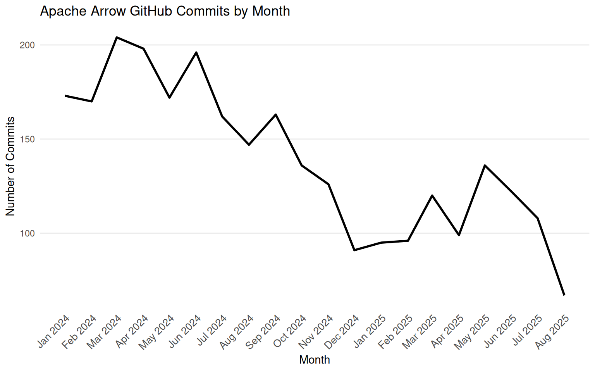
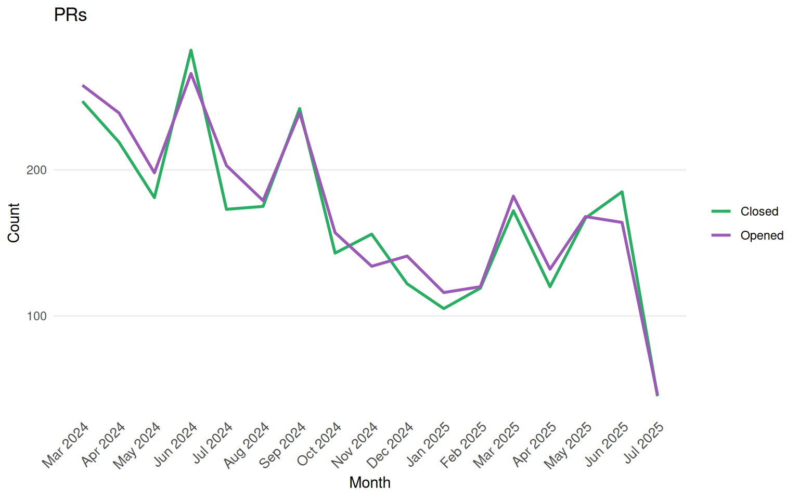
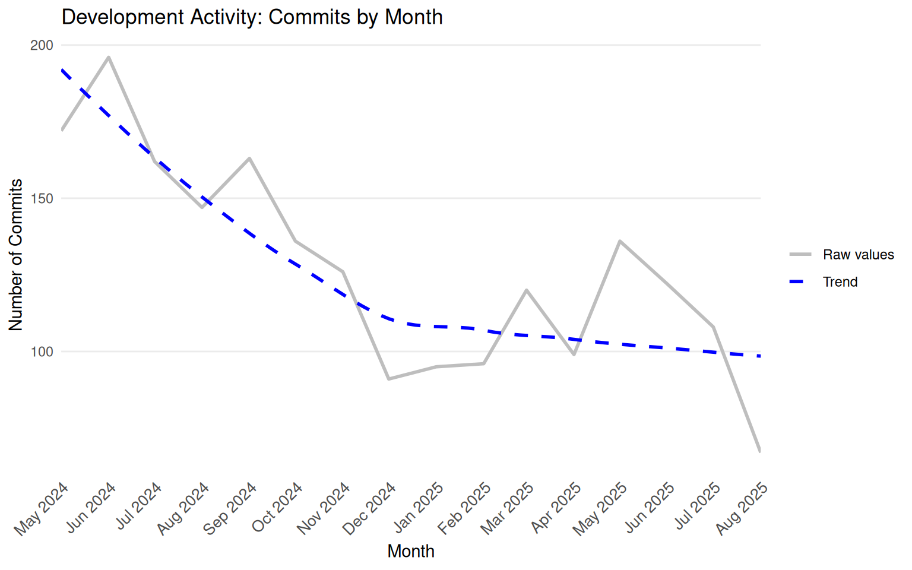

Open Issues (and change since 1 month ago)
4194 (+33)
Open PRs (and change since 1 month ago)
350 (+6)
Issues
88
Pull Requests
71
Stack Overflow Questions
1
Mailing List messages
0
Open Issues
55
Issues from New Contributors
28
Issues with No Replies
23
Open PRs
17
PRs from New Contributors
9
Unreviewed PRs
0
Questions in last 90 days
1
Questions without accepted answer
1
Questions with no activity
0
Issues
40
Pull Requests
44
Stack Overflow Questions
0
Mailing List messages
0
Open Issues
17
Issues from New Contributors
8
Issues with No Replies
6
Open PRs
5
PRs from New Contributors
0
Unreviewed PRs
2
Questions in last 90 days
0
Questions without accepted answer
0
Questions with no activity
0
The content below is an LLM summary of this month’s activity on the mailing list.
The Apache Arrow dev mailing list showcases ongoing efforts in core performance, data type standardization, and project simplification. Recent discussions highlight progress in independent language component management, CI/CD improvements, and community engagement. Key releases include nanoarrow 0.7.0, Arrow JS 21.0.0, Arrow ADBC 19, Arrow Swift 21.0.0, Rust Object Store 0.12.3, and the main Apache Arrow 21.0.0.
arrow-gpu): A new arrow-gpu backend using wgpu is proposed for vendor-neutral GPU acceleration of compute kernels. ThreadOpen Issues (and change since 1 month ago)
Open PRs (and change since 1 month ago)